Delanteros
Un delantero, también llamado atacante, punta, ariete o extremo, es un jugador de un equipo de fútbol que se destaca en la posición de ataque, la más cercana a la portería del equipo rival, y es por ello el principal responsable de marcar los goles.
Marcus Rashford
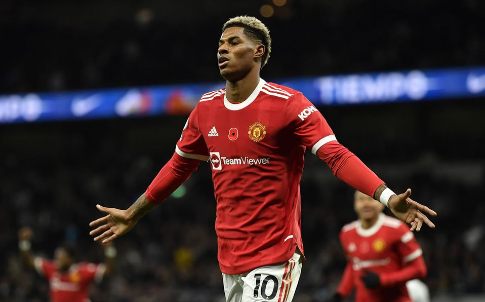Jugador Estrella
Marcus Rashford es un futbolista britanico de ascendencia sancristobaleña, que juega como delantero en el Manchester United F. C. de la Premier League de Inglaterra y en la selección nacional de Inglaterra.
Jadon Sancho
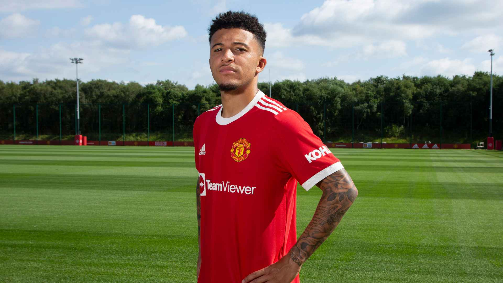Jadon Sancho es un futolista británico que juega como centrocampista o delantero en el Manchester United F. C. de la Premier League de Inglaterra.
Cristiano Ronaldo
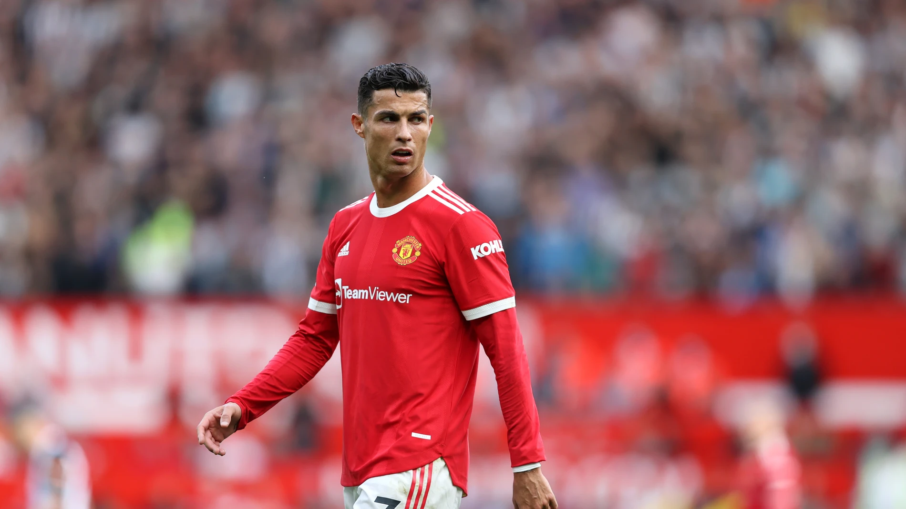Cristiano Ronaldo Dos Santos es un futbolista portugués que juega como delantero en el Manchester United Football Club de la Premier League de Inglaterra y en la selección de Portugal, de la cual es su capitán y máximo goleador histórico.
Edinson Cavani
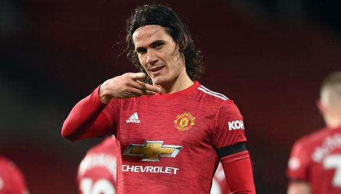Edinson Cavani es un futbolista y escritor uruguayo que juega como delantero y su equipo actual es Manchester United F. C. de la Premier League de Inglaterra. Es internacional absoluto en la Selección de Uruguay desde 2008.
Centrocampista
Un centrocampista, mediocampista, mediocentro defensivo, enganche, volante ofensivo, volante interior es el futbolista que juega en el centro del campo o por los costados y que se ubica entre los defensores y el delantero. Sus funciones son variadas y dependen de si el centrocampista es ofensivo o defensivo.
Bruno Fernendes
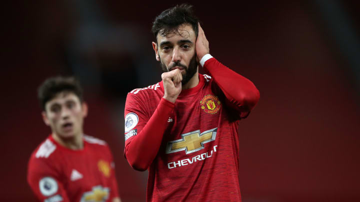Bruno Fernandes es un futbolista portugués que juega de centrocampista en el Manchester United F. C. de la Premier League de Inglaterra.
Pogba
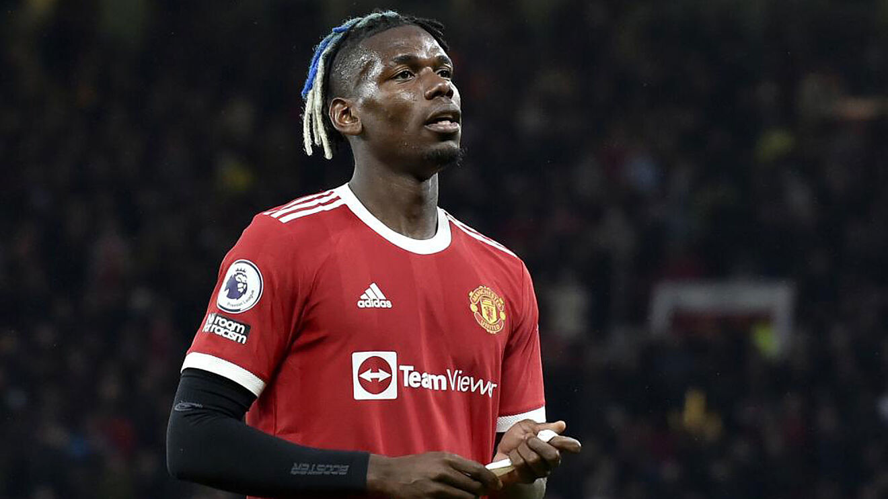Paul Pogba es un futbolista francés que juega como centrocampista en el Manchester United F. C. de la Premier League de Inglaterra. Es internacional absoluto con la selección de Francia. Es hermano menor de los también futbolistas Florentin y Mathias Pogba.
Fred
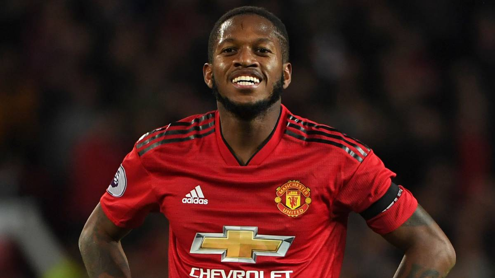Frederico Rodrigues de Paula Santos más conocido como Fred, es un futbolista brasileño. Juega como centrocampista y su equipo es el Manchester United F. C. de la Premier League de Inglaterra.
Van de Beek
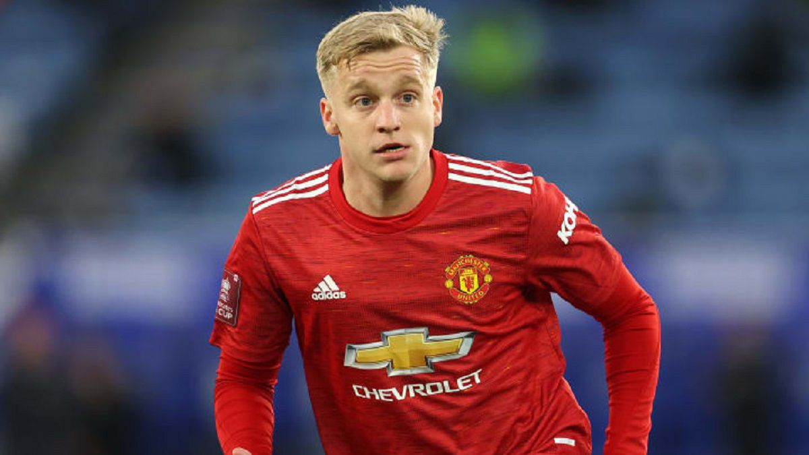Donny van de Beek es un futbolista neerlandés, juega como centrocampista y su equipo es el Manchester United F. C. de la Premier League de Inglaterra.
Defensas
El defensa, defensor, marcador o zaguero1 es un jugador del campo que tiene como rol principal impedir que los adversarios se acerquen a portería y marquen goles. Existen varios tipos de defensor como el defensa central, defensor libre, lateral (ubicados en las bandas del campo), carrilero y defensores de medio campo.
Maguire
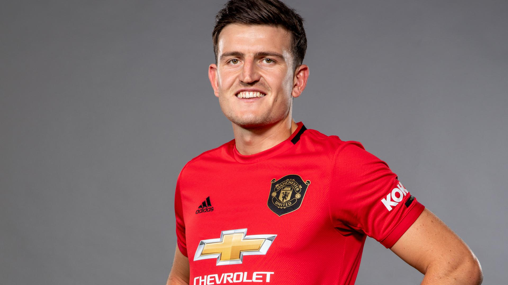Capitán
Harry Maguire es un futbolista británico que juega de defensa en el Manchester United F. C. de la Premier League de Inglaterra, del cual es capitán.
Rap
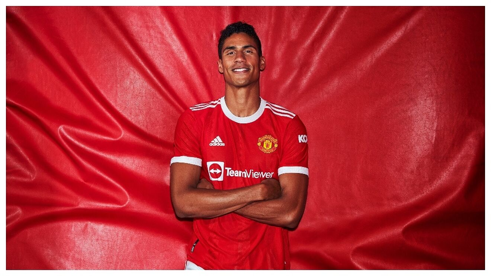Raphaël Varane, es un futbolista francés que juega como defensa en el Manchester United Football Club de la Premier League de Inglaterra.
Luke Shaw
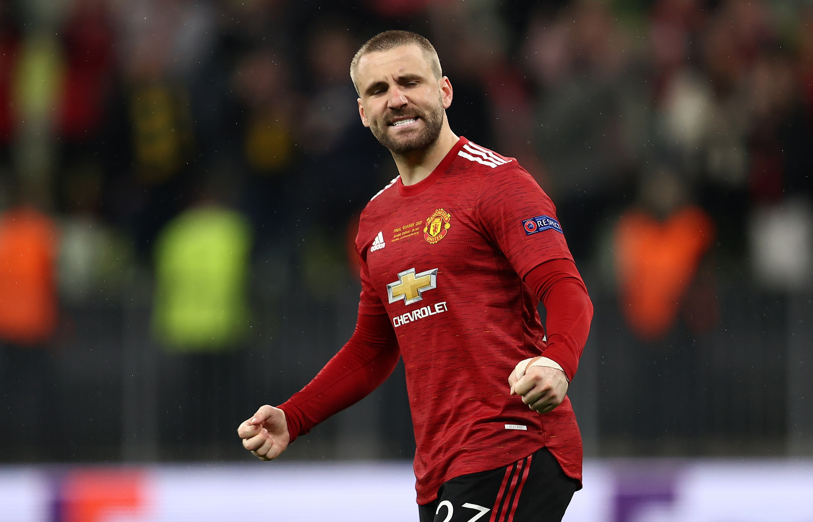Luke Paul Hoare Shaw, es un futbolista británico. Juega de defensa en el Manchester United F. C. de la Premier League de Inglaterra.
Aaron Wan-Bissaka

Aaron Wan-Bissaka es un futbolista británico. Juega de defensa y su equipo es el Manchester United F. C. de la Premier League de Inglaterra.